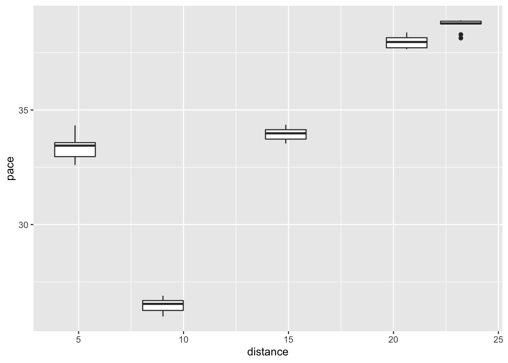
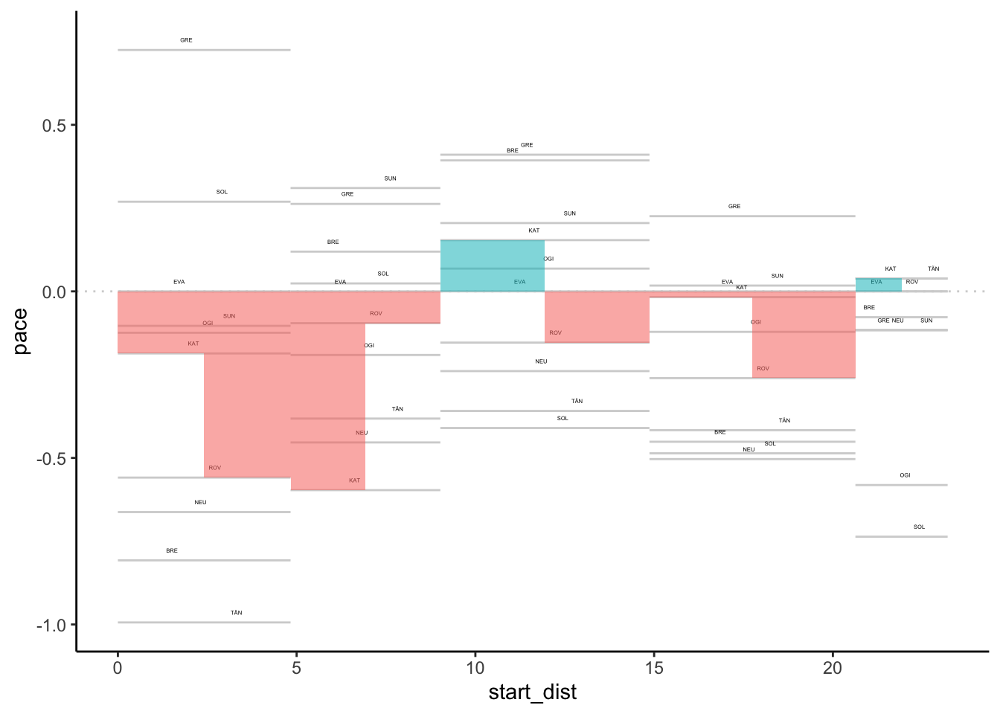
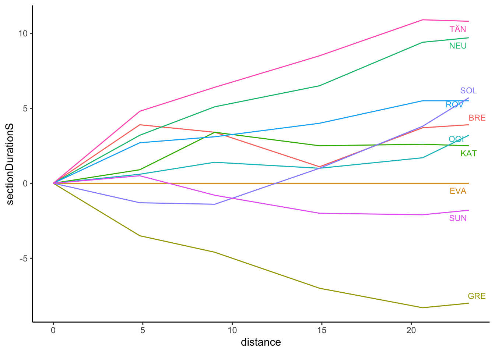

8 Visualising Pace Across Splits
We have already seen how we can perform pace calculations on stage level data and use pace maps and off-the-pace charts to visualise pace over the course of a rally.
But in WRC rallies at least, the stages are often long enough, and the promoter well resourced enough, to merit the collection of split data data at various split points along a stage. So in this chapter, we’ll review how we can create pace charts and apply the techniques to plotting progress within a stage, across stage splits.
8.1 Load Base Data
As ever, load in the helper functions:
source('code/wrc-api.R')
source('code/wrc-wrangling.R')
source('code/wrc-charts.R')And get the base data:
s = get_active_season()
eventId = get_eventId_from_name(s, 'arctic')
itinerary = get_itinerary(eventId)
sections = get_sections(itinerary)
stages = get_stages(sections)
stages_lookup = get_stages_lookup(stages)
# Quick Lookups
stage_list = get_stage_list(stages)
stage_codes = stages$code
# Driver details
entries = get_rally_entries(eventId)
cars = get_car_data(entries)Get a sample stage ID and associated splits:
# Get example stage ID
stageId = stages_lookup[['SS3']]
# Get splits for the stage
splits = get_splits(eventId, stageId)
splits_locations = get_split_locations(splits)
splits_list = splits_locations$splitPointId
# Get wide format data
splits_wide = get_splits_wide(splits) %>%
relabel_times_df2(splits_list, cars, typ='split')
splits_wide %>% head(2)## code split_1 split_2 split_3 split_4 split_5
## 1 OGI 161.7 272.3 471.3 690.4 789.2
## 2 EVA 162.3 273.7 472.3 692.1 792.4Get long form splits data for one or more stages, in this case, just a single stage:
splits_long = get_multi_split_times(stageId)8.1.1 Obtaining Split Distances
We can find the distance between each split as the difference between consecutive values. Let’s augment the splits_locations with these values as well as with section start distances:
splits_locations$start_dist = lag(splits_locations$distance,
default=0)
splits_locations$section_dist = c(splits_locations$distance[1],
diff(splits_locations$distance))
splits_locations## splitPointId stageId number distance splitname start_dist section_dist
## 1 3615 1750 1 4.83 split_1 0.00 4.83
## 2 3601 1750 2 9.02 split_2 4.83 4.19
## 3 3621 1750 3 14.87 split_3 9.02 5.85
## 4 3617 1750 4 20.63 split_4 14.87 5.76
## 5 3593 1750 5 23.21 split_5 20.63 2.58We can also retrieve these section distances into a splitPointId named list:
split_distances = splits_locations$section_dist
# Label the values
names(split_distances) = splits_locations$splitPointId
split_distances## 3615 3601 3621 3617 3593
## 4.83 4.19 5.85 5.76 2.58We recall that the split points do not include the final timing line (the finish), so a complete set of distances also means we need to access the overall stage distance and account for that:
stage_dist = stages[stages['stageId']==stageId,'distance']
stage_dist## [1] 24.43The complete set of intermediate distances is then:
full_split_distances = c(split_distances, stage_dist-sum(split_distances))
names(full_split_distances) = c(names(split_distances), 'total')
full_split_distances## 3615 3601 3621 3617 3593 total
## 4.83 4.19 5.85 5.76 2.58 1.228.2 Calculating Splits Pace
To calculate pace between two split points we need to get the elapsed time between those two points as well as the distance between split points.
We can obtain the split differences by finding differences between the columns of the wide format dataframe using the get_split_duration() function we created previously:
split_cols = get_split_cols(splits)
split_durations_wide = get_split_duration(splits_wide, split_cols,
id_col='code')## Error in `[.data.frame`(df, , split_cols): undefined columns selectedsplit_durations_wide %>% head(3)## code split_1 split_2 split_3 split_4 split_5
## 1 OGI 161.7 110.6 199.0 219.1 98.8
## 2 EVA 162.3 111.4 198.6 219.8 100.3
## 3 NEU 159.1 109.5 197.2 216.9 100.0We can then find the pace by dividing the split section times through by the split distances:
section_pace_wide = split_durations_wide
for (s in splits_list) {
s_ = as.character(s)
section_pace_wide[,s_] = section_pace_wide[,s_] / split_distances[s_]
}## Error in `[.data.frame`(section_pace_wide, , s_): undefined columns selectedsection_pace_wide %>% head(2)## code split_1 split_2 split_3 split_4 split_5
## 1 OGI 161.7 110.6 199.0 219.1 98.8
## 2 EVA 162.3 111.4 198.6 219.8 100.38.3 Visualising the Splits Pace
To visualise the pace over each of the split sections, we can use exactly the same techniques that we used to visualise the stage pace, including pace maps and off-the-pace charts.
There are several different ways in which we might try to visualise pace. First, we can visualise absolute or rebased pace. Second, we can visualise pace within sections, using the times taken to get one split point to the next, or across the stage as a whole using the accumulated stage time.
8.3.1 Pace Over Each Section
One quick way of inspecting the pace over each section is to use a box plot:
section_pace_long = section_pace_wide %>%
head(10) %>%
gather(splitPointId, pace,
as.character(splits_list)) %>%
merge(splits_locations[,c('splitPointId',
'start_dist', 'distance')],
by='splitPointId')## Error: Can't subset columns that don't exist.
## x Columns `3615`, `3601`, `3621`, `3617`, and `3593` don't exist.section_pace_long %>% head(3)## splitPointId code pace start_dist distance
## 1 3593 OGI 38.29457 20.63 23.21
## 2 3593 EVA 38.87597 20.63 23.21
## 3 3593 NEU 38.75969 20.63 23.21ggplot(section_pace_long[section_pace_long$pace<40,],
aes(x=distance, y=pace)) +
geom_boxplot(aes(group=distance)) This suggests that the section between the first and second split may be quite technical, and the final sections much faster.
Comparing section times against route metrics as described in Visualising Rally Stages will be the focus of a future unbook. Comparing manufacturer performance against different section and stage route types might also be worth further investigation.
8.3.2 Splits Sections Pace Maps
To generate the pace map, let’s first rebase the split times with respect to a specified driver:
example_driver = section_pace_wide[2,]$code
section_pace_wide_rebased = rebase(section_pace_wide, example_driver,
splits_list, id_col='code')## Error in `[.data.frame`(df, df[[id_col]] == id, rebase_cols): undefined columns selectedsection_pace_wide_rebased %>% head(3)## code 3615 3601 3621 3617 3593
## 1 OGI -0.1242236 -0.1909308 0.06837607 -0.1215278 -0.5813953
## 2 EVA 0.0000000 0.0000000 0.00000000 0.0000000 0.0000000
## 3 NEU -0.6625259 -0.4534606 -0.23931624 -0.5034722 -0.1162791To plot the pace map, we need to get the data into a long format:
section_pace_long_rebased = section_pace_wide_rebased %>%
head(10) %>%
gather(splitPointId, pace,
as.character(splits_list)) %>%
merge(splits_locations[,c('splitPointId',
'start_dist', 'distance')],
by='splitPointId')
section_pace_long_rebased %>% head()## splitPointId code pace start_dist distance
## 1 3593 OGI -0.58139535 20.63 23.21
## 2 3593 EVA 0.00000000 20.63 23.21
## 3 3593 NEU -0.11627907 20.63 23.21
## 4 3593 ROV 0.00000000 20.63 23.21
## 5 3593 KAT 0.03875969 20.63 23.21
## 6 3593 GRE -0.11627907 20.63 23.21We can now view the rebased pace over the splits:
section_pace_long_rebased %>%
pace_map( xstart='start_dist',
drivers=c('KAT','ROV'),
xend='distance', id_col='code', lines=FALSE, label_dodge=2)
8.3.3 Off-the-Pace Splits Pace Mapping
To review the off-the-pace performance over the splits on a stage, we can use the off-the-pace chart function applied to rebased elapsed times data..
Let’s get some rebased data using the accumulated stage time at each split, hackfix flipping the basis of the rebase for now until such a time as the off-the-pace chart is better behaved:
wide_splits_rebased = splits_wide %>%
head(10) %>%
rebase(example_driver,
splits_locations$splitname,
id_col='code', flip=TRUE)
wide_splits_rebased %>% head(3)## code split_1 split_2 split_3 split_4 split_5
## 1 OGI 0.6 1.4 1.0 1.7 3.2
## 2 EVA 0.0 0.0 0.0 0.0 0.0
## 3 NEU 3.2 5.1 6.5 9.4 9.7We can convert this to long form and add in distance information:
long_splits_rebased = wide_splits_rebased %>%
pivot_longer(splits_locations$splitname,
names_to = "splitname",
values_to = "sectionDurationS") %>%
merge(splits_locations[,c('splitname','distance')],
by='splitname')
long_splits_rebased %>% head(3)## splitname code sectionDurationS distance
## 1 split_1 OGI 0.6 4.83
## 2 split_1 BRE 3.9 4.83
## 3 split_1 ROV 2.7 4.83At the start of the chart, it’s convenient to add some zeroed values, so let’s create a dataframe to help us add those data points:
zero_df = data.frame(code=unique(long_splits_rebased$code))
zero_df$distance = 0
zero_df$sectionDurationS=0
zero_df$splitname = 'split_0'And add them in:
long_splits_rebased = bind_rows(long_splits_rebased, zero_df)The off-the-pace chart is intended to show how much time is lost over the course of a stage, the gradient of the slope in each section being an indicator of the pace differential within that section (i.e. between two consecutive split points).
The off-the-pace chart is most easily generated from a long dataframe containing the accumulated stage time rather than the sectional times.
For example, we can cast the wide form data to a long form and co-opt the pace chart to render the times for us:
long_splits_rebased %>%
off_the_pace_chart(dist='distance',
t='sectionDurationS',
label_typ='ggrepel',
code='code')